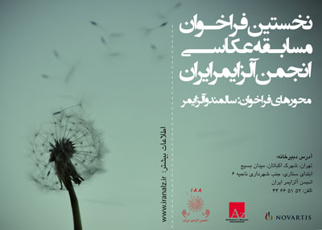
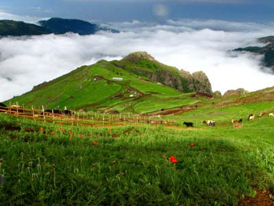
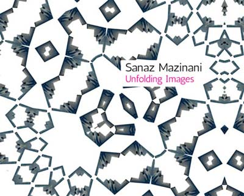
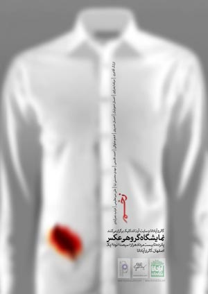
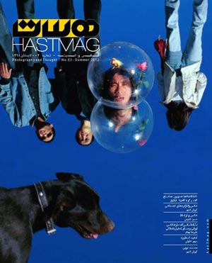
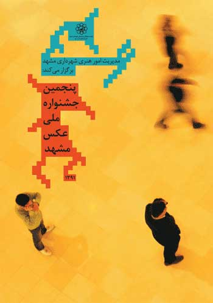
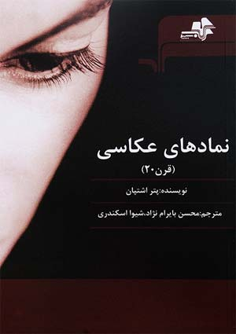
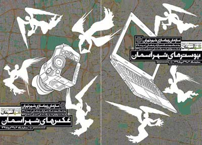

اخبار زیر ذره بینی ...
برای دریافت اخبار، ایمیل خود را وارد نمائید.
"لیست اخبار"
فراخوان مسابقه عکاسی انجمن آلزایمر ایران
کمپ عکاسی تالش، اسالم و خلخال
فراخوان نمایشگاه اعضای انجمن عکاسان ایران
انتشار کتاب عکسهای ساناز مزینانی در کانادا
نمایشگاه گروهی عکس در گالری آپادانا اصفهان
مجله اینترنتی «هست» شماره سه
فراخوان اردوی پنجمین جشنواره عکس مشهد
موفقیت عکاس ایرانی در ششمین مسابقهی Px3
معرفی کتاب نمادهای عکاسی (قرن بیستم)
نمایشگاه جشنواره هنرهای تجسمی شهر آسمان
چهارشنبه ۱۸ مرداد ۱۳۹۱
فراخوان مسابقه عکاسی انجمن آلزایمر ایران

انجمن آلزایمر ایران با مشارکت شرکت دارویی نوارتیس، قصد دارد نخستین مسابقه عکاسی را برگزار نماید.
این فراخوان حرکتی در راستای معرفی بیشتر فعالیتهای انجمن، ارتقاء میزان آگاهی و دانش عمومی مردم نسبت به بیماری آلزایمر و بیماران مبتلا به آن میباشد. لذا از عکاسان، انجمنهای عکاسی و علاقهمندان دعوت میگردد که با شرکت در این مسابقه و استفاده از این رسانه قدرتمند و نافذ، هنر خود را در ثبت لحظات جاودانه و نمایش چهرههای معصوم این عزیزان به کار گرفته و در تولید محتوای دیداری و گویا، گام بلندی بردارند.
باشد که صدای این ولی نعمتان خاموش جامعه به گوش مسئولین رسانده شود.
برای دریافت اطلاعات بیشتر به سایت www.iranalz.ir مراجعه کنید.
دوشنبه ۱۶ مرداد ۱۳۹۱
کمپ عکاسی تالش، اسالم و خلخال

خانه سینماگران جوان چهارمین سری از کمپهای عکاسی خود را از جمعه بیست و هفتم مرداد ماه ۹۱ به مدت سه روز در مناطق ییلاقی تالش، اسالم و خلخال برگزار میکند.
در این کمپ کارگاههای تخصصی عکاسی تدارک دیده شده و در پایان آخرین روز کمپ پس از بررسی آثار شرکت کنندگان به منتخبین جوایزی به رسم یادبود اهدا میشود.
اقامت در خانههای روستایی، عکاسی از مناظر بکر و کم نظیر منطقه، عکاسی از جنگل، بازدید و عکاسی از ییلاقات تالش و اسالم و.. بخشی از برنامههای متنوعی است که برای این کمپ پیش بینی شده است
در دورههای گذشته کمپهای عکاسی خانه سینماگران جوان همواره بیش از ۹۰ نفر از علاقمندان، همسفر این برنامه جذاب، تفریحی و آموزشی بودند ولی در این کمپ به دلیل محدودیت اقامت ظرفیت اعلام شده فقط ۴۰ نفر میباشد
نکته قابل توجه این برنامه اسکان گروه در منطقه «اسب هونی» از ییلاقات زیبا و بکر تالش است که برای روزهای دیگر بازدیدهایی از ییلاقهای دیگر همچون: سوباتان، پیر سون، ناو اسالم و خانه سفید در نظر گرفته شده که از منطقه اسکان، گروه بوسیله وانت و جیپ از میان راههای سر سبز و جنگلی به این ییلاقات منتقل خواهند شد.
آرش عاشوری نیا مدرس کارگاههای این کمپ خواهد بود.
کمپ عکاسی تالش - اسالم - خلخال توسط خانه سینماگران جوان با مشارکت موسسه توریستی ایران دوستان در مناطق ییلاقی تالش و اسالم برگزار میشود.
برای دریافت اطلاعات بیشتر و ثبت نام با شمارههای ۸۸۷۳۹۳۴۱ - ۸۸۷۳۱۵۷۹ روابط عمومی خانه سینماگران جوان تماس بگیرید.
دوشنبه ۱۶ مرداد ۱۳۹۱
فراخوان نمایشگاه اعضای انجمن عکاسان ایران
دبیرخانه انجمن عکاسان ایران در اطلاعیهای از اعضای انجمن دعوت کرد، برای حضور هرچه بهتر و حرفهییتر عکاسان عضو در نمایشگاه عکس، اسلایدشو و اینتراکشن پیشبینی شده برای برنامه ده روز با عکاسان که از ۲۱ تا ۳۰ آذرماه ۱۳۹۱ در خانهٔ هنرمندان ایران برگزار خواهد شد، حداکثر ۱۰ عکس دلخواه خود را با موضوع آزاد و بهصورت تک عکس در اندازه ۲۰×۳۰ سانتیمتر و ۳۰۰ دیپیآی به ایمیل info@nips.org.ir ارسال و یا CD عکسها را تا پایان شهریورماه ۱۳۹۱ به دبیرخانه انجمن عکاسان ایران به آدرس تهران، خیابان طالقانی، خیابان موسوی شمالی (فرصت)، باغ هنر، خانه هنرمندان ایران ارسال کنند.
جمعه ۱۳ مرداد ۱۳۹۱
انتشار کتاب عکسهای ساناز مزینانی در کانادا

کتابی با عنوان «تصاویر گشایشگر» در برگیرنده عکسهای ساناز مزینانی توسط انتشارت گالری بلگر در کانادا منتشر شد. این کتاب در برگیرنده سه مجموعه عکس مزینانی با عناوین «کنفرانس پرندگان»، «ایران بازدیده شده» و «قابهای پدیدار» و سه مقاله از جرمی باربر، استاد دانشگاه استنفورد، دیوید فرسکو، دانشجوی دکتری تاریخ هنر دانشگاه استنفورد و محمدرضا میرزایی، عکاس و نویسنده متون عکاسی و پیشگفتاری از مایا مری ساتنیک، کیوریتور آرت گالری در اونتاریو است.
ساناز مزینانی عکاس ایرانی ساکن آمریکا، تحصیلاتش را از کالج هنر و دیزاین اونتاریو شروع کرد و پس از آن در مقطع کارشناسی ارشد در رشته هنرهای زیبا از دانشگاه استنفورد آمریکا فارغالتحصیل شد. آثار او عمدتا به رابطه میان دیدن و ادراک و نیز تضادهای فرهنگی میان جایی که مزینانی اکنون در آن زندگی میکند با ایران، کشوری که در آن به دنیا آمدهاست میپردازد. عکسهای او در نمایشگاههای متعددی در کانادا و آمریکا در معرض نمایش قرار گرفتهاند.
کتاب «تصاویر گشایشگر» به تازگی و همزمان با نمایشگاه انفرادی ساناز مزینانی در گالری بگلر در کانادا منتشر و در دسترس علاقهمندان قرار گرفته است.
سه شنبه ۱۰ مرداد ۱۳۹۱
نمایشگاه گروهی عکس در گالری آپادانا اصفهان

نمایشگاه گروهی عکس با عنوان زخم از ۱۳ تا ۱۸ مرداد در گالری آپادانا اصفهان برگزار خواهد شد. مرتضا بصراوی. احمد قاسمی. فرشید نصرآبادی، احسان خسروی. مهدی محسنی نیا، علی میرعظیمی. ارژنگ آقاجری، ادهم صلواتی و احسان تحویلیان آثارشان را با رویکردی متفاوت به موضوع مشترک «زخم» به نمایش خواهند گذاشت.
هر یک از این عکاسان در این نمایشگاه میتوانند با عکس یا عکسهایشان فضایی معادل ۱۰۰×۷۰ سانتیمتر از دیوار گالری را اشغال کنند. انتخاب افراد برای این نمایشگاه به گونهای بوده که طیف متنوعی از تفکر و رویکرد را در بر داشته باشد.
این نمایشگاه ۱۳ مرداد ساعت ۱۷ افتتاح خواهد شد و تا ۱۸ مرداد همه روز صبحها از ساعت ۱۰ تا ۱۳ و بعد از ظهرها ساعت ۱۷ تا ۲۱ میزبان علاقمندان خواهد بود.
گالری آپادانا، اصفهان، خیابان آپادانا دوم (۱۵ خرداد)، کوچه لاله، پلاک ۲۵
سه شنبه ۱۰ مرداد ۱۳۹۱
مجله اینترنتی «هست» شماره سه

در چهارمین شماره از نشریه الکترونیکی «هست» خواننده و بینندهٔ آثار و گفتاری خواهید بود از کورش ادیم، عماد خیاطی، حسن شفیعی، علیرضا بهنام، مهدی فروغی، لی وی، سپهر خلیلی، ادریس شیخی، سمیه بهادری فر، محمدرضا طهماسبپور و عباس کوثری. در این شماره ضمن انتشار قسمت دوم مصاحبه با دست اندرکاران گالری «هما»، قسمت اول مصاحبه با مدیر گالری راه ابریشم (آناهیتا قباییان) در چهارچوب پیگیری ویژه نامهٔ «اقتصاد عکاسی» به همراه مقاله ای تحت عنوان «چرا اثر هنری یک کالا نیست؟» منتشر شد.
پروندهٔ چند شمارهٔ آینده نیز به «عکاسی و مطالعات اجتماعی» خواهد پرداخت که در این شماره با سه مقاله در این موضوع آغاز شده است. از دیگر موارد این شماره معرفی یک عکاس بین المللی چینی به نام «li wei» است که خواستگاهش پرفورمنس آرت است. در یکی از بخشهای این شماره همچنین جریان جدیدی تحت عنوان پیشنهادی «مستند نوین» با معرفی «عباس کوثری» به مخاطبان ارائه شده است و در خاتمه رد مطالعات اجتماعی در تاریخ عکاسی ایران بررسی شده است.
دیگر همراهان این شماره: سارا خلیلی، حامد جابرها، عزالدین قدردوست، بنیامین پاسوار، سدید سلاجقه، سیما یوسف نیا، طناز دایی صادقی و مریم موسوی نیا
يكشنبه ۰۸ مرداد ۱۳۹۱
فراخوان اردوی پنجمین جشنواره عکس مشهد

پنجمین جشنواره ملی عکس مشهد بر اساس روشهای فرهنگی خود و مطابق دورههای گذشته این جشنواره ملی و پس از برگزاری چهار اردوی مستقل برای عکاسان ساکن در استانهای خراسان رضوی، جنوبی و شمالی که با استقبال بینظیرعکاسان و حضور ۳۵۰ عکاس همراه بود، اکنون اقدام به برگزاری اردوی عکاسی ویژه عکاسان غیرخراسانی ساکن در تمامی شهرستانهای ایران میکند.
علاقه مندان به ثبت نام با مطالعه دقیق مفاد فراخوان در زمان مقتضی ثبت نام نمایند:
۱- این اردو از تاریخ یکشنبه ۱۲ تا چهارشنبه ۱۵ شهریور ۱۳۹۱در شهر مقدس مشهد برگزار خواهد شد.
۲- هزینههای اقامت، پذیرایی، صبحانه، نهار و شام برعهده جشنواره میباشد.
۳- دبیرخانه جشنواره از میان رزومههای دریافتی، حداکثر چهل عکاس را برای این اردو گزینش خواهد کرد. بدیهی است این گزینش بر اساس شرح فعالیتها و رزومه ارسالی عکاسان شرکت کننده خواهد بود.
۴- عکاسان داوطلب باید رزومه خود را که در آن فعالیتهای عکاسی، حضور در بخش مسابقه جشنوارههای معتبر، موفقیتهای داخلی و خارجی، و هرگونه فعالیت مرتبط باعکاسی ذکر شده باشد، حداکثر تا ساعت ۲۴ روز چهارشنبه ۱۸ مرداد ۱۳۹۱ به صورت یک فایل وردی به آدرس الکترونیکی khatami_seyed@yahoo.com ارسال کنند و در بخش Subject ایمیل، کلمه Ordoo را ذکر نمایند.
۵- اسامی منتخبین جهت دعوت به این اردو، جمعه ۲۰ مرداد ۱۳۹۱ در سایت عکاسی اعلام خواهد شد.
عکاسان منتخب از صبح یکشنبه ۱۲ تا عصر چهارشنبه ۱۵ شهریور ۱۳۹۱ در مشهد مقدس، میهمان ما خواهند بود.
شنبه ۰۷ مرداد ۱۳۹۱
موفقیت عکاس ایرانی در ششمین مسابقهی Px3
با اعلام برگزیدگان ششمین دورهی مسابقهی بینالمللی عکس Px3 در بخش غیرحرفهای حمیده ذوالفقاری از ایران ضمن کسب مدال طلای بخش موضوعی «دیگران» در مجموع نتایج گرایش خبری نیز به مقام سوم دست یافت.
در این رقابت بینالمللی که هر سال به میزبانی پاریس در دو دستهی حرفهای و غیرحرفهای برگزار میشود عکاسان در گرایشها و بخشهای مختلفی به رقابت با یکدیگر میپردازند. امسال و در ششمین دورهی این مسابقه، حمیده ذوالفقاری، عکاس ایرانی، با سه پرتره از کودکان روستایی ایران در بخش غیرحرفهای با گرایش «خبری» و در بخش موضوعی «دیگران» موفق به کسب مدال طلا شد و در مجموع در میان تمام بخشهای زیرمجموعهی گرایش «خبری» نیز مقام سوم را بدست آورد. عکسهای برتر این دوره از ۲۰ تا ۲۷ تیرماه سالجاری در گالری DUPON پاریس به نمایش درآمد و قرار است مطابق روال هر دوره در قالب یک کتاب عکس نیز به چاپ برسد.
حمیده ذوالفقاری، عکاس ۵۵ سالهی ایرانی، متولد تهران و دانشآموختهی عکاسی در دانشگاه سنخوزهی کالیفرنیاست و آثار او تاکنون در نمایشگاههای گوناگونی در داخل و خارج کشور به نمایش درآمده و جوایز مختلفی را از آن خود کرده است. این عکاس ایرانی، که تلاشهای بسیاری در ثبت و ضبط زندگی سنتی و تنوع قومی مردم ایران زمین داشته است، سابقهی همکاری با سازمان یونیسف را هم در پروندهی کاری خود دارد و تاکنون دو کتاب عکس به نامهای «کتاب تهران» (با همراهی نصرالله کسرائیان) و «زن زندگی اقوام ایرانی» را نیز منتشر کرده است.
این مسابقه به گفتهی دستاندرکارانش تلاشی است برای ترویج و قدردانی از عکاسی، کشف استعدادهای در حال ظهور و معرفی عکاسان سراسر جهان به جامعهی هنری پاریس و در هر دو دستهی حرفهای و غیرحرفهای با گرایشهای مختلفی چون خبری، طبیعت، فاین آرت، پرتره، تبلیغاتی و کتاب عکس برگزار میشود که هر کدام از این گرایشها نیز دارای زیرمجموعههای موضوعی مختلفی هستند و نهایتا در هر گرایش سه عکاس برگزیده در زیرمجموعههای موضوعی رتبههای سهگانه را از آن خود میکنند و از میان آنها نیز یک نفر به عنوان عکاس برتر سال و یک نفر به عنوان برترین استعداد جوان سال شناخته میشود. امسال جاناتان نولس، عکاس باسابقهی مقیم لندن، به عنوان عکاس برتر سال برگزیده شد و میگوئل کاندلا، عکاس ۲۷ سالهی اسپانیایی، هم به عنوان استعداد جوان سال معرفی شد.
چهارشنبه ۰۴ مرداد ۱۳۹۱
معرفی کتاب نمادهای عکاسی (قرن بیستم)

کتاب نمادهای عکاسی (قرن بیستم)، نوشتهٔ گروه نویسندگان و به دبیریِ پتر اشتپان، با ترجمهٔ محسن بایرامنژاد و شیوا اسکندری به چاپ رسید. این کتاب توسط انتشارات مرکب سپید در قطع وزیری، تمام گلاسهٔ مصور، در ۲۸۰ صفحه و با قیمت ۱۴ هزار تومان منتشر شده است.
در بخشی از مقدمهٔ مترجمان چنین آمده است:
«در رابطه با تاریخ عکاسی و آشنایی با عکاسان پیشگام، همواره نظراتی دو-وجهی مطرح شده است. یا تاریخ و آثار ماندگارِ نامهای بزرگ را رد کرده و با بیمیلی، دوران کنونی را مدرن مینامیم؛ و یا با بهیاد سپردن نامها، تکرار بیمورد و تقدسبخشی به آنها، به وجه اول دامن میزنیم. هنرجویان و علاقهمندان جدیِ این رسانه، با نگاهِ تحلیلی و به جهت الهامگیری از تجارب گذشته، تاریخ عکاسی و آثار ماندگار عکاسان پیشگام را مطالعه میکنند. با این نوع نگاه، عکس، علاوه بر ارزشهای تاریخی، به عنوان عاملی برای بهبودِ شرایط فعلی –تخصصی یا اجتماعی– مطرح میشود.
کتابِ نمادهای عکاسی (قرن بیستم) به پیشنهادِ انتشارات مرکب سپید، همسو با نگاهِ کاربردیِ ذکر شده، به فارسی ترجمه شد. این کتاب در سال ۱۹۹۹، توسط انتشارات پرِستل در آلمان به چاپ رسیده و ترجمهٔ حاضر، از چاپ دوم کتاب (سال ۲۰۰۵) صورت گرفته است.»
چهارشنبه ۰۴ مرداد ۱۳۹۱
نمایشگاه جشنواره هنرهای تجسمی شهر آسمان

نمایشگاه جشنواره هنرهای تجسمی «شهرآسمان» به مناسبت ماه مبارک رمضان از سوی سازمان زیباسازی شهر تهران در خانه هنرمندان ایران برگزار میشود.
این جشنواره به دبیری کیانوش غریبپور در دو بخش پوستر و عکس و با هدف پاسداشت ارزشهای معنوی ماه مبارک رمضان و ارتقای فضای بصری شهر تهران در این ماه برگزار میشود.
مراسم افتتاح نمایشگاه و معرفی برگزیدگان این جشنواره شنبه ۷ مرداد ساعت ۱۹ با حضور هنرمندان و مسئولان سازمان زیباسازی در تماشاخانه ایرانشهر برگزار میشود.
نمایشگاه به مدت ۲۰ روز در گالریهای خانه هنرمندان ایران برپا است.